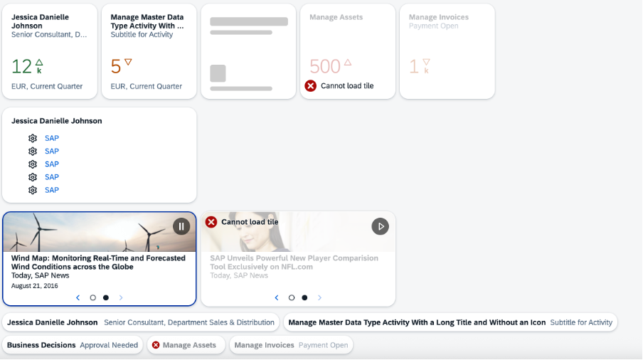

GenericTile control is the basic concept that displays any kind of
content within a tile comprising, for example, news, feeds, images, micro charts, or,
numeric content.GenericTile controls are responsive and adapt
their size to the size of the devices they are used on. The control is available in
small and large size. Depending on the size of the screen, the appropriate size of
the control is chosen automatically. Therefore, the size property
is deprecated and should not be used anymore.

For more information, see the API Reference and the Sample.
LayoutThe GenericTile control
provides a header area, a content area, and a status area. Within these areas,
different data can be displayed depending on the app the tile belongs to, for
example, text in the header area, charts or an icon in the content area, or text
only in the footer area.
Header area
The headline and a subtitle can be displayed. The header area is mandatory,
but if the NewsContent control is used in the content area,
no header and subheader should be used.
If you use HeaderMode, up to five lines of header can be
displayed and the content area is not displayed.
Content area
The TileContent control that represents the content area is
the universal container for different content types. This means that the
TileContent control can contain one of the following
controls:
NumericContent (frameType 1x1):
numeric value and icon
FeedContent (frameType 2x1): up to
two lines of text
NewsContent (frameType 2x1): text
and background image
MicroCharts (frameType 1x1):
charts
ImageContent (frameType 1x1):
images and icons
Status area
A status can be displayed. The status area is not mandatory.
SlideTile
GenericTile controls of the
2x1 frameType can be implemented as SlideTile
control. The GenericTile control added to the
SlideTile control appears alternately, showing one content at a
time. The animated content of the slide tile includes a navigation option to pause
the slide show or to navigate forward or backward to the slide. You can use
SlideTile controls, for example, in day-to-day business to
display news.
Tooltip Rendering
The
GenericTile control generates a tooltip only if the header or
subheader are truncated. In that case, the tooltip contains the full text of the
truncated header or subheader.
If the GenericTile control
contains a MicroChart control in its content area, the generated
tooltip contains information about the embedded MicroChart
content.
If an application provides an own tooltip, the generated tooltip of
the GenericTile control is overwritten and the tooltip of the
application is displayed. You can suppress the tooltip for your application by
providing a tooltip consisting of whitespaces only. The ARIA label is not
changed.
Line Mode
With this mode, you can switch the
visual representation of the GenericTile from the rectangular
format to an in-line format only by changing the value of the mode
property and keeping all other settings as already set. After the switch, the API
for the tiles and links stays consistent, and the control's ID and the contents stay
the same. Only the header and subtitle are rendered.
With SAPUI5 1.34, the
following controls are moved from the sap.suite.ui.commons library
to the sap.m library:
GenericTileTileContentFeedContent (formerly JamContent)NewsContentNumericContentSlideTile (formerly DynamicContainer)The following controls have not been transferred to the sap.m
library and are no longer used:
GenericTile2X2
TileContent2X2
If you have already included one of these controls before SAPUI5 1.34, a wrapper
ensures that the embedding still works for each control. To benefit from all
enhancements and new features for one of these controls as of SAPUI5 1.34, you need to
switch to the controls in the sap.m library. With SAPUI5 1.34, all these
controls in the sap.suite.ui.commons library are marked as
deprecated.